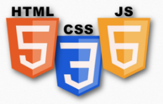
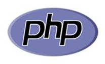

This area is very new to me, as I'm sure the quality of this website can attest to. However, the internet and web based programming is such a large part of our lives nowadays that knowing how to do development in this field would certainly be beneficial.
Frontend
For frontend development, it seems that JavaScript, HTML, and CSS are the big players. HTML is the markup language to build the websites, and CSS is a styling side of it. JavaScript, according to Stack Overflow's 2018 Developer Survey, is the most popular language among developers. People seem to like it because it is flexible (with Node.js it can be run server side too) and works across all major browsers and platforms. Check out some thoughts here in section 1.
Image here taken from our orientation powerpoint.

Server side
The same site has another couple sectios, 6 and 7, on PHP and Ruby. These two languages appear to be great options if you're looking for server side web development. PHP has more than 75 million websites that run it, so work will be needed for quite some time, and Ruby looks like a great new language with lots of support and lots of flexibility for new programmers. I especially like the unofficial motto, "Matz is nice and so we are nice."